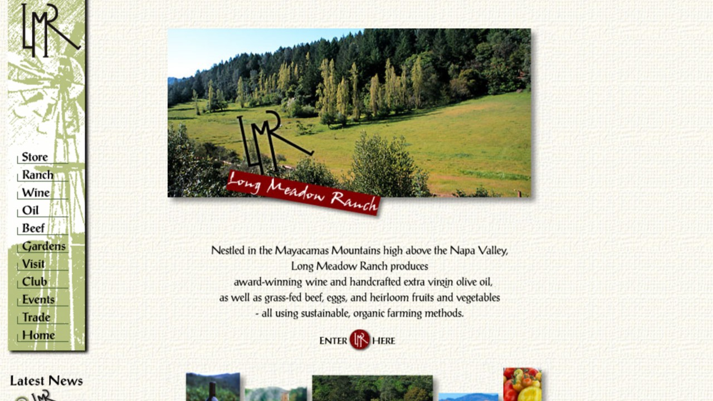

work i've done
 2026
2026
Slumped Over Man
Premiered August 19, 2026 at The New Parkway Theater in Oakland. I was the production manager.
Judge Moody
A portable LLM-as-judge subagent for Claude Code that tells you how strong its standard actually was.
Source on GitHub ↗mac-maid
A read-only audit for repo hygiene and filesystem clutter on macOS. It finds things; you decide what happens to them.
Source on GitHub ↗ 2022 — present
2022 — present
Film and media production
Since 2022 I have been working in film and media production while finishing a film production degree at City College of San Francisco.
 2012 — 2020
2012 — 2020
Google Shopping Express
The biggest single thing I have been part of. I joined before the public launch and built the field operations team from zero to thirty operators. Out of it came the sealable grocery bag, co-filed with Sam Truslow — a single packaging SKU that let us bring on a full set of CPG and grocery partners. US 2014/0294322 A1.
2009 — 2012Earth and Maps imagery
After the car project I moved to Geo, where the job was keeping imagery moving into Google Earth and Google Maps.
2008 — 2009Project Chauffeur
I joined Google's self driving car effort when it was still called Project Chauffeur. I ran safety testing protocols and watched the sensors.

2007 — 2008Wine and agriculture
Before Google I worked at Long Meadow Ranch in St. Helena, building out their website, online store, and email marketing.